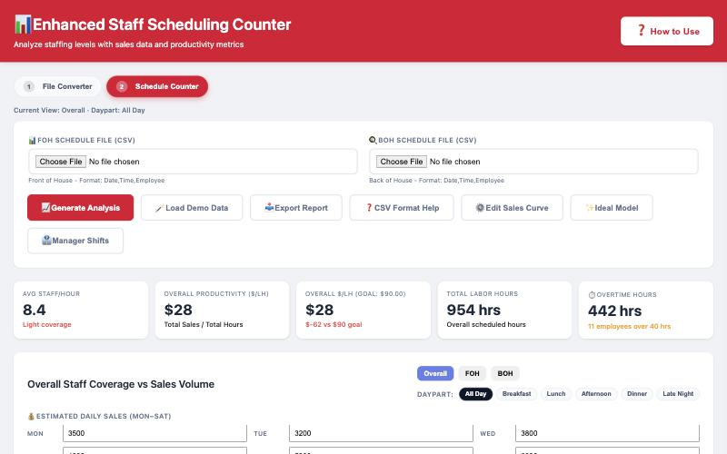
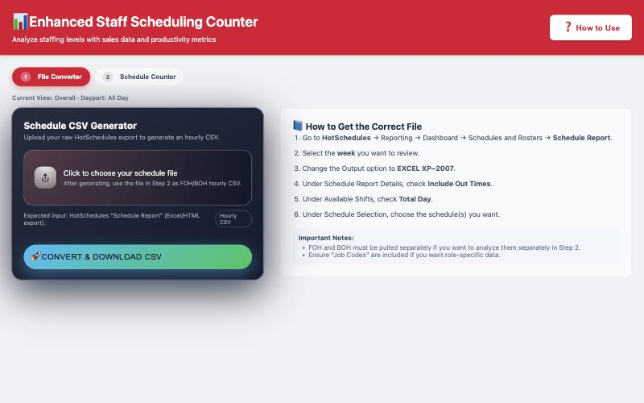
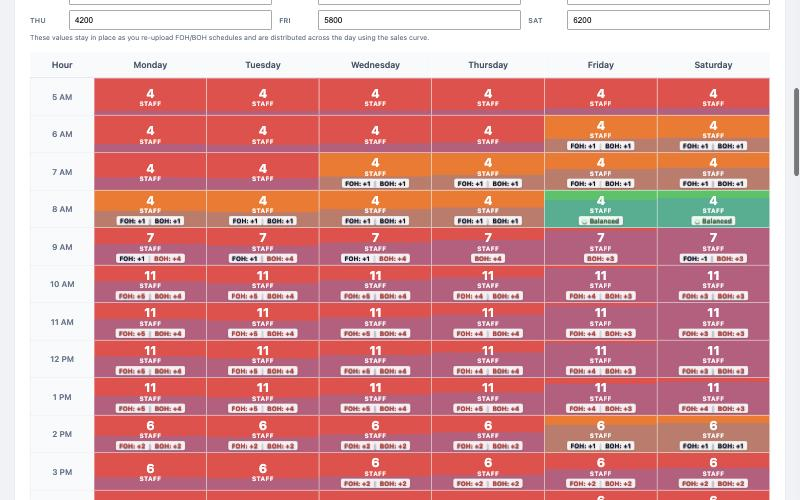

Schedule Counter (No-Setup Version) — Setup Guide
See how many people you have scheduled each hour next to what your sales forecast says you need, then get a list of hours to cut, add or watch for burnout. It's one web page. There's nothing to install and no Google setup. Plan on about 10 minutes the first time, on a computer (not a phone).
Before you start
- A computer with Chrome, Edge or Safari, connected to the internet
- HotSchedules access, to pull the week's Schedule Report
- A sales estimate for each day, Monday through Saturday
- Your productivity goal in sales per labor hour, e.g. $90, and your rough FOH / BOH labor split
Step 1: Open the tool
Click Open the Schedule Counter. Bookmark the page so you can come back to it.
Want a copy that lives on your computer instead? Right-click the same link, choose Save Link As…, and open the saved file whenever you need it. It still needs the internet to draw its charts.
Step 2: Try it with demo data (optional)
- Click the 2 Schedule Counter tab.
- Click 🪄 Load Demo Data, then OK.
The grid, charts and action list fill in with made-up staff and sales, so you can see what you're working toward. Loading your own files replaces the demo.

Step 3: Pull your schedule from HotSchedules
- In HotSchedules go to Reporting → Dashboard → Schedules and Rosters → Schedule Report.
- Pick the week you want to review.
- Set Output to EXCEL XP–2007.
- Under Schedule Report Details, tick Include Out Times.
- Under Available Shifts, tick Total Day.
- Under Schedule Selection, choose the schedule you want. Run FOH and BOH as two separate reports if you want to see them separately.
The same steps are on the tool's 1 File Converter tab.
Step 4: Convert the file
- On the 1 File Converter tab, click Click to choose your schedule file and pick the report you just downloaded.
- Click 🚀 Convert & Download CSV. A file named like
schedule hours for 11-10-11-16.csvlands in your Downloads folder. - Do it again for your second report (FOH and BOH each get their own CSV).

Step 5: Load the converted files
- Click the 2 Schedule Counter tab.
- Put the FOH CSV in FOH Schedule File and the BOH CSV in BOH Schedule File. You can also drag a file onto either box.
- Type your sales estimate for each day in Estimated Daily Sales (Mon–Sat).
Step 6: Set your goals (first time only)
- Click ⚙️ Edit Sales Curve.
- Set your Productivity Goals (Overall, FOH, BOH) and your Labor Mix percentages.
- Check the Percent of Daily Sales by Hour column. It's how each day's sales are spread across the hours. Adjust it to match your store.
- Click Close. The tool remembers these settings next time.
Step 7: Run it
Click 📈 Generate Analysis. Use the Overall / FOH / BOH and Daypart buttons to change what you're looking at. Click any hour to see who's on.

Where your data is kept
- Nothing is uploaded anywhere. Your files are read inside your own browser.
- Remembered on this computer, in this browser: your sales curve, goals, labor mix, daily sales estimates and any manager names you type in.
- Not remembered: the schedule files and employee names. Load the CSVs again each time you open the page.
- The online link and a saved copy on your computer keep their settings separately.
How to know it worked
- The five cards at the top show numbers: Avg Staff/Hour, Productivity, $/LH vs goal, Total Labor Hours and Overtime.
- The grid is colored by hour. Green is on target; red and orange are off.
- 💡 Optimization Insights lists hours to cut, add or watch for burnout.
If something goes wrong
- "This looks like a raw HotSchedules export!" You put the HotSchedules report straight into Step 5. Convert it on the 1 File Converter tab first (Step 4), then load the CSV it downloads.
- The $/LH card says N/A or "Enter daily sales estimates." Type a sales number for each day you're open, Monday to Saturday.
- The converter says no schedule data was found, or shifts land on the wrong days. Re-run the HotSchedules report with Output set to EXCEL XP–2007 and both Include Out Times and Total Day ticked, then convert again. Open the CSV and check a few shifts against HotSchedules before you trust the numbers.